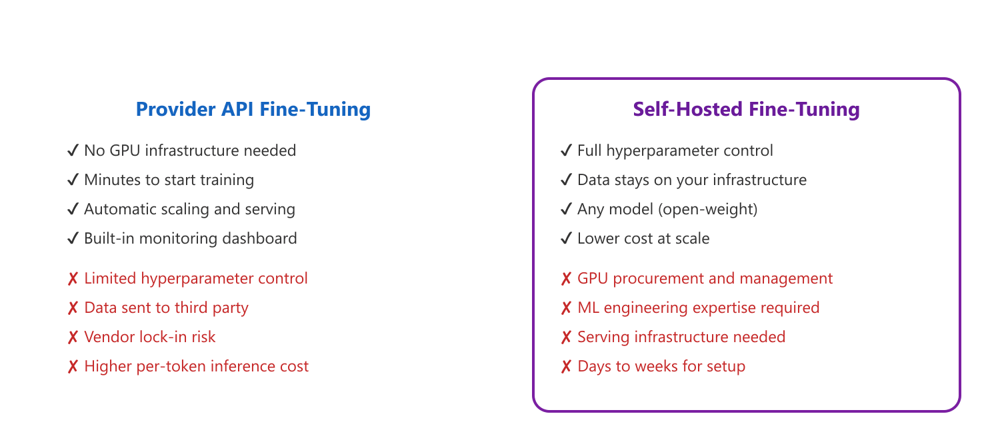
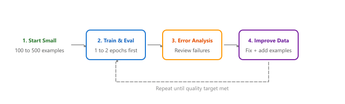

"Upload JSONL. Click train. Wait. Download model. It really is that simple, until you need to debug why it is not working."
Finetune, Deceptively Simple AI Agent
Not every team needs to manage their own GPU cluster. Provider APIs offer a managed fine-tuning experience where you upload your data, configure a few parameters, and receive a fine-tuned model endpoint. This approach trades control and flexibility for simplicity and speed. Building on the API patterns from Section 11.1, this section covers the two most widely used provider APIs (OpenAI and Google Vertex AI), walks through complete workflows for each, and provides a framework for deciding when managed fine-tuning is the right choice versus self-hosted training.
Prerequisites
Before starting, make sure you are familiar with fine-tuning concepts as covered in Section 16.1: When and Why to Fine-Tune.
16.4.1 OpenAI Fine-Tuning API
OpenAI's fine-tuning API (building on the API foundations from Chapter 11) is the most accessible entry point for teams new to fine-tuning. It supports GPT-4o, GPT-4o-mini, and GPT-3.5-turbo models with a straightforward workflow: prepare data in JSONL format, upload the file, create a fine-tuning job, and use the resulting model through the standard chat completions API.
Provider fine-tuning APIs have made the process so simple that the hardest part is no longer "how do I train?" but "should I train?" Many teams upload 50 examples, click "Start Training," get a model back in 30 minutes, and declare victory. Then they discover that their fine-tuned model is worse than the base model with a good prompt, because 50 examples is rarely enough to beat a well-engineered system prompt.
"Fine-tuning teaches the model new facts" is the single most common false reason teams reach for the fine-tune button. Fine-tuning adjusts behavior: style, format, refusal patterns, function-calling structure. It is poor at injecting new factual knowledge, because each fact appears too rarely in the training data to overcome catastrophic forgetting. If you need the model to know your company's product catalogue, use RAG (the facts live in retrieval, not in weights). Reach for fine-tuning when you need a consistent output schema, a domain-specific tone, or a behavior the base model refuses to do reliably.
16.4.1.1 Data Preparation for OpenAI
OpenAI requires training data in JSONL format with the ChatML messages structure. Each line contains a JSON object with a messages array. The system message is optional but recommended for consistent behavior.
Mental Model: The Cloud Workshop. Think of provider fine-tuning APIs as a cloud workshop where you send raw materials (your dataset) and receive a finished product (a fine-tuned model). You do not need to own the machinery (GPUs) or understand every step of the manufacturing process (training loop details). The trade-off is control: you cannot inspect every step, adjust obscure hyperparameters, or see exactly what happened during training. For many practical applications, this convenience outweighs the loss of control, much like ordering custom furniture instead of building it yourself. Code Fragment 16.4.2 shows this approach in practice.
# Format training data as JSONL for the OpenAI fine-tuning API
# Each line contains a messages array with system, user, and assistant turns
import json
from typing import List, Dict
def prepare_openai_training_file(
examples: List[Dict],
output_path: str,
validate: bool = True
) -> dict:
"""Prepare and validate a JSONL file for OpenAI fine-tuning."""
stats = {"total": 0, "valid": 0, "errors": [], "token_estimates": []}
with open(output_path, "w") as f:
for i, example in enumerate(examples):
stats["total"] += 1
messages = example.get("messages", [])
if validate:
# Validate message structure
if not messages:
stats["errors"].append(f"Example {i}: empty messages")
continue
roles = [m["role"] for m in messages]
# Must end with assistant message
if roles[-1] != "assistant":
stats["errors"].append(
f"Example {i}: last message must be 'assistant'"
)
continue
# Check for valid roles
valid_roles = {"system", "user", "assistant"}
invalid = set(roles) - valid_roles
if invalid:
stats["errors"].append(
f"Example {i}: invalid roles {invalid}"
)
continue
# Rough token estimate (4 chars per token)
total_chars = sum(len(m["content"]) for m in messages)
estimated_tokens = total_chars // 4
stats["token_estimates"].append(estimated_tokens)
f.write(json.dumps(example) + "\n")
stats["valid"] += 1
if stats["token_estimates"]:
import numpy as np
tokens = np.array(stats["token_estimates"])
stats["token_summary"] = {
"mean": int(tokens.mean()),
"median": int(np.median(tokens)),
"p95": int(np.percentile(tokens, 95)),
"total_training_tokens": int(tokens.sum()),
}
print(f"Prepared {stats['valid']}/{stats['total']} examples")
if stats["errors"]:
print(f"Errors: {len(stats['errors'])}")
for err in stats["errors"][:5]:
print(f" {err}")
return stats
# Example usage
examples = [
{
"messages": [
{"role": "system", "content": "You are a helpful customer support agent."},
{"role": "user", "content": "How do I reset my password?"},
{"role": "assistant", "content": "To reset your password, go to Settings, "
"then Security, and click 'Reset Password'. You will receive an email "
"with a reset link within 5 minutes."}
]
},
# ... more examples
]
stats = prepare_openai_training_file(examples, "train.jsonl")16.4.1.2 Creating and Monitoring a Fine-Tuning Job
Code Fragment 16.4.8 demonstrates the full fine-tuning job lifecycle: uploading files, creating a job, and monitoring progress.
# Format training data as JSONL for the OpenAI fine-tuning API
# Each line contains a messages array with system, user, and assistant turns
from openai import OpenAI
import time
client = OpenAI() # Uses OPENAI_API_KEY env var
# Step 1: Upload training file
with open("train.jsonl", "rb") as f:
training_file = client.files.create(file=f, purpose="fine-tune")
print(f"Uploaded file: {training_file.id}")
# Step 2: (Optional) Upload validation file
with open("val.jsonl", "rb") as f:
validation_file = client.files.create(file=f, purpose="fine-tune")
# Step 3: Create fine-tuning job
job = client.fine_tuning.jobs.create(
training_file=training_file.id,
validation_file=validation_file.id,
model="gpt-4o-mini-2024-07-18",
hyperparameters={
"n_epochs": 3, # Number of epochs
"learning_rate_multiplier": 1.8, # Relative to default
"batch_size": 4, # Auto if not specified
},
suffix="customer-support-v1", # Custom model name suffix
)
print(f"Job created: {job.id}")
print(f"Status: {job.status}")
# Step 4: Monitor training progress
def monitor_fine_tuning(job_id: str, poll_interval: int = 60):
"""Poll a fine-tuning job until completion."""
while True:
job = client.fine_tuning.jobs.retrieve(job_id)
print(f"Status: {job.status}")
# Check for events (training metrics)
events = client.fine_tuning.jobs.list_events(
fine_tuning_job_id=job_id, limit=5
)
for event in events.data:
print(f" [{event.created_at}] {event.message}")
if job.status in ("succeeded", "failed", "cancelled"):
break
time.sleep(poll_interval)
if job.status == "succeeded":
print(f"\nFine-tuned model: {job.fine_tuned_model}")
return job.fine_tuned_model
else:
print(f"\nJob {job.status}: {job.error}")
return None
model_name = monitor_fine_tuning(job.id)16.4.1.3 Using the Fine-Tuned Model
Code Fragment 16.4.3 shows how to call the fine-tuned model using the standard chat completions API.
# Step 5: Use the fine-tuned model (identical to standard API calls)
from openai import OpenAI
client = OpenAI()
response = client.chat.completions.create(
model="ft:gpt-4o-mini-2024-07-18:my-org:customer-support-v1:9abc123",
messages=[
{"role": "system", "content": "You are a helpful customer support agent."},
{"role": "user", "content": "I can't find my order confirmation email."},
],
temperature=0.7,
max_tokens=200,
)
# Extract the generated message from the API response
print(response.choices[0].message.content)OpenAI fine-tuning pricing (as of early 2025; check current rates before planning). You pay for training tokens (the number of tokens in your dataset multiplied by the number of epochs) and for inference on the fine-tuned model (which is more expensive per token than the base model). For GPT-4o-mini, training costs approximately $3.00 per million tokens and inference costs $0.30/$1.20 per million input/output tokens. LLM API prices drop frequently, so always check the provider's pricing page and estimate total cost before starting a job, especially with large datasets.
16.4.2 Google Vertex AI Fine-Tuning
Google Vertex AI provides fine-tuning for Gemini models with a similar managed experience. The workflow uses the Google Cloud SDK and supports both supervised fine-tuning and RLHF-style tuning. Vertex AI gives you slightly more control over hyperparameters compared to OpenAI. Code Fragment 16.4.4 shows this in practice.
16.4.2.1 Vertex AI Workflow
This snippet launches a fine-tuning job on Google Cloud Vertex AI using the Gemini tuning API.
import time
# Upload training data to GCS and launch a Vertex AI SFT job
# Vertex AI fine-tunes Gemini models with LoRA adapter configuration
import vertexai
from vertexai.tuning import sft as vertex_sft
from google.cloud import storage
# Initialize Vertex AI
vertexai.init(project="my-project-id", location="us-central1")
# Step 1: Upload training data to GCS
# Vertex AI expects data in GCS (Google Cloud Storage)
# Format: JSONL with same messages structure as OpenAI
def upload_to_gcs(local_path: str, bucket_name: str, blob_name: str) -> str:
"""Upload training data to Google Cloud Storage."""
client = storage.Client()
bucket = client.bucket(bucket_name)
blob = bucket.blob(blob_name)
blob.upload_from_filename(local_path)
gcs_uri = f"gs://{bucket_name}/{blob_name}"
print(f"Uploaded to {gcs_uri}")
return gcs_uri
train_uri = upload_to_gcs(
"train.jsonl",
"my-training-bucket",
"fine-tuning/medical-qa/train.jsonl"
)
val_uri = upload_to_gcs(
"val.jsonl",
"my-training-bucket",
"fine-tuning/medical-qa/val.jsonl"
)
# Step 2: Create supervised fine-tuning job
sft_tuning_job = vertex_sft.train(
source_model="gemini-1.5-flash-002",
train_dataset=train_uri,
validation_dataset=val_uri,
epochs=3,
adapter_size=4, # LoRA rank (1, 4, 8, or 16)
learning_rate_multiplier=1.0,
tuned_model_display_name="medical-qa-gemini-v1",
)
# Step 3: Monitor (blocking call)
print(f"Job resource: {sft_tuning_job.resource_name}")
# Poll for completion
while not sft_tuning_job.has_ended:
time.sleep(60)
sft_tuning_job.refresh()
print(f"State: {sft_tuning_job.state}")
# Step 4: Get the tuned model endpoint
tuned_model = sft_tuning_job.tuned_model_endpoint_name
print(f"Tuned model endpoint: {tuned_model}")
16.4.2.2 Using the Vertex AI Fine-Tuned Model
Code Fragment 16.4.5 demonstrates using the tuned Gemini model for inference.
# Use the fine-tuned Gemini model for inference via Vertex AI
# The tuned model endpoint is returned by the completed SFT job
from vertexai.generative_models import GenerativeModel
# Load the fine-tuned model
model = GenerativeModel(
model_name=tuned_model, # Endpoint from training
)
# Generate responses
response = model.generate_content(
"Patient presents with recurring headaches and blurred vision. "
"Suggest differential diagnoses.",
generation_config={
"temperature": 0.3,
"max_output_tokens": 500,
}
)
print(response.text)16.4.3 Provider Comparison
compares the key decision factors between API fine-tuning and self-hosted approaches.

| Aspect | OpenAI | Google Vertex AI | Self-Hosted (TRL) |
|---|---|---|---|
| Available models | GPT-4o, GPT-4o-mini, GPT-3.5 | Gemini 1.5 Flash, Gemini 1.5 Pro | Any open-weight model |
| Data format | JSONL (ChatML) | JSONL (ChatML) | Any (ChatML, Alpaca, ShareGPT) |
| Max training examples | 50 million tokens | 10,000 examples | Unlimited |
| Hyperparameter control | Epochs, LR multiplier, batch size | Epochs, LR multiplier, adapter size | Full control over all parameters |
| Training cost (10K examples) | ~$15 to $50 (GPT-4o-mini) | ~$10 to $40 (Gemini Flash) | $5 to $20 (cloud GPU rental) |
| Time to first result | 30 min to 2 hours | 1 to 3 hours | Hours to days (setup + training) |
| Data privacy | Data processed by OpenAI | Data processed by Google | Data stays on your servers |
| Model weights access | No (API only) | No (API only) | Full access |
| Serving | Included (pay per token) | Included (pay per token) | Self-managed (vLLM, TGI) |
16.4.4 Anthropic Claude Fine-Tuning
Anthropic offers fine-tuning for Claude models through its API, enabling teams to customize Claude's behavior on domain-specific tasks. The workflow follows a similar pattern to OpenAI and Vertex AI: prepare data in JSONL format, submit a fine-tuning job, and use the resulting model through the Messages API. Claude fine-tuning supports models including Claude 3.5 Haiku and Claude 3 Haiku, with data formatted as conversational message pairs.
16.4.4.1 Data Format and Job Submission
Anthropic's fine-tuning data format mirrors the Messages API structure. Each training example is a JSON object with a messages array (alternating user and assistant turns) and an optional system field. The training data must be uploaded as a JSONL file. Code Fragment 16.4.3b shows this approach in practice.
# Fine-tune a Claude model via the Anthropic API
# Anthropic uses a different message format: system is a top-level field
import anthropic
import json
# Step 1: Prepare training data in Anthropic's format
training_examples = [
{
"system": "You are a medical triage assistant.",
"messages": [
{"role": "user", "content": "Patient reports chest pain radiating to left arm."},
{"role": "assistant", "content": "Priority: URGENT. Recommend immediate ECG and "
"troponin levels. Differential includes acute coronary syndrome, "
"musculoskeletal pain, and anxiety. Escalate to attending physician."}
]
},
# ... more examples in the same format
]
# Write JSONL file
with open("anthropic_train.jsonl", "w") as f:
for ex in training_examples:
f.write(json.dumps(ex) + "\n")
# Step 2: Create the fine-tuning job via the Anthropic SDK
client = anthropic.Anthropic() # Uses ANTHROPIC_API_KEY env var
# Upload the training file
with open("anthropic_train.jsonl", "rb") as f:
training_file = client.files.create(
file=f,
purpose="fine-tune"
)
# Create the fine-tuning job
job = client.fine_tuning.jobs.create(
model="claude-3-5-haiku-20241022",
training_file=training_file.id,
hyperparameters={
"n_epochs": 4,
"learning_rate": 1e-5,
"batch_size": 8,
},
)
print(f"Fine-tuning job created: {job.id}")
print(f"Status: {job.status}")
# Step 3: Poll for completion
import time
while job.status not in ("succeeded", "failed", "cancelled"):
time.sleep(60)
job = client.fine_tuning.jobs.retrieve(job.id)
print(f"Status: {job.status}")
# Step 4: Use the fine-tuned model
if job.status == "succeeded":
response = client.messages.create(
model=job.fine_tuned_model,
max_tokens=300,
system="You are a medical triage assistant.",
messages=[
{"role": "user", "content": "Patient has sudden onset severe headache."}
],
)
print(response.content[0].text)Key differences from OpenAI fine-tuning. Anthropic's fine-tuning places the system prompt as a top-level field rather than inside the messages array. Anthropic also enforces strict alternation between user and assistant turns within the messages array. Check the latest Anthropic documentation for supported models and pricing, as the fine-tuning offering has been expanding through 2025 and 2026.
Why this matters: Provider API fine-tuning represents a fundamental tradeoff: you sacrifice control and customization in exchange for dramatically lower operational complexity. For teams without dedicated ML infrastructure engineers, API fine-tuning eliminates GPU procurement, distributed training configuration, and model deployment entirely. The practical implication is that your first fine-tuning experiment should almost always start with a provider API (as covered in Chapter 11), and you should only move to self-hosted training once you have validated that fine-tuning actually improves your use case and you need capabilities the API does not expose.
16.4.5 Third-Party Fine-Tuning Platforms
Beyond the major model providers, several third-party platforms offer managed fine-tuning with additional flexibility. These platforms are particularly valuable when you need to fine-tune open-weight models (Llama, Mistral, Qwen) with more hyperparameter control than provider APIs allow, but without managing your own GPU infrastructure.
| Platform | Supported Models | Key Differentiators | Hyperparameter Control |
|---|---|---|---|
| Together AI | Llama-3.x, Mistral, Qwen, Code Llama, custom uploads | Broad open-model catalog; integrated serverless inference; competitive training pricing | Full: LR, epochs, batch size, warmup, LoRA rank, weight decay |
| Fireworks AI | Llama-3.x, Mistral, Mixtral, Gemma, custom uploads | Optimized inference engine (FireAttention); sub-second cold starts; model composition (combining base + adapters at serving time) | Full: LR, epochs, batch size, LoRA config, sequence length |
| Anyscale | Llama-3.x, Mistral, custom models via Ray | Built on Ray for distributed training; seamless scale from fine-tuning to multi-node training; enterprise MLOps integration | Full: all training parameters, distributed training config, custom training scripts |
These platforms fill an important gap in the fine-tuning ecosystem. Provider APIs (OpenAI, Google, Anthropic) offer simplicity but limit you to their proprietary models with restricted hyperparameter access. Self-hosted training (using TRL or Axolotl) gives full control but requires GPU procurement and ML engineering expertise. Third-party platforms provide a middle path: you get access to open-weight models with extensive hyperparameter control, while the platform handles GPU provisioning, distributed training orchestration, and serving infrastructure.
16.4.5.1 Together AI: Fine-Tuning Open-Weight Models
Together AI provides a Python SDK and REST API for fine-tuning open-weight models on managed infrastructure. The workflow resembles the OpenAI pattern (upload data, create job, poll for completion), but you choose from a catalog of open-weight base models and have access to a richer set of hyperparameters including LoRA rank, warmup ratio, and weight decay. Once training completes, the fine-tuned model is automatically available for inference through Together's serverless endpoint, or you can download the weights for self-hosted deployment. Code Fragment 16.4.7 shows this in practice.
# Fine-tune an open-weight model on Together AI with full LoRA control
# Together supports Llama, Mistral, Qwen, and custom model uploads
import together
import json
# Step 1: Upload training data (same JSONL/ChatML format)
train_file = together.Files.upload(file="train.jsonl")
print(f"Uploaded: {train_file.id}")
# Step 2: Create a fine-tuning job with full hyperparameter control
job = together.Fine_tuning.create(
training_file=train_file.id,
model="meta-llama/Meta-Llama-3.1-8B-Instruct",
n_epochs=3,
learning_rate=2e-5,
batch_size=8,
lora=True,
lora_r=16, # LoRA rank
lora_alpha=32, # LoRA scaling factor
lora_dropout=0.05,
warmup_ratio=0.1,
suffix="customer-support-v1",
)
print(f"Job: {job.id}, Status: {job.status}")
# Step 3: Poll for completion
import time
while job.status not in ("completed", "failed", "cancelled"):
time.sleep(30)
job = together.Fine_tuning.retrieve(job.id)
print(f"Status: {job.status}")
# Step 4: Inference via Together's serverless endpoint
if job.status == "completed":
response = together.Complete.create(
model=job.output_name,
prompt="<|user|>\nHow do I reset my password?\n<|assistant|>\n",
max_tokens=200,
temperature=0.7,
)
print(response.choices[0].text)16.4.5.2 Fireworks AI: Adapter Composition and Fast Inference
Fireworks AI differentiates itself through its optimized inference engine (FireAttention) and its support for adapter composition: you can train multiple LoRA adapters against the same base model and combine them at serving time without retraining. This is particularly useful when you need different behavioral specializations (tone, domain expertise, format) that can be mixed and matched per request. Fine-tuning through Fireworks follows a similar API pattern, with the addition of serving configuration that specifies how the adapter should be loaded. Code Fragment 16.4.8a shows this in practice.
# Fine-tune a LoRA adapter on Fireworks AI with composable deployment
# Fireworks supports adapter composition: mix adapters at serving time
import fireworks.client as fw
# Configure the client
fw.client.api_key = "your-api-key"
# Step 1: Upload dataset
dataset = fw.Datasets.create(
file=open("train.jsonl", "rb"),
name="support-training-data",
)
# Step 2: Create fine-tuning job
job = fw.FineTuning.create(
model="accounts/fireworks/models/llama-v3p1-8b-instruct",
dataset=dataset.id,
epochs=3,
learning_rate=1e-4,
lora_rank=16,
max_seq_length=2048,
output_model_name="support-adapter-v1",
)
# Step 3: Deploy the adapter (composable with base model)
# Fireworks serves the adapter on top of the base model at inference time
deployment = fw.Deployments.create(
model=job.output_model,
min_replicas=1,
max_replicas=4, # auto-scales based on traffic
)
# Step 4: Inference (adapter applied at serving time)
response = fw.ChatCompletion.create(
model=f"accounts/my-org/models/support-adapter-v1",
messages=[
{"role": "user", "content": "I can't find my order confirmation."}
],
temperature=0.7,
)
print(response.choices[0].message.content)Adapter composition is a powerful pattern. With Fireworks (and increasingly with other platforms), you can train separate LoRA adapters for different capabilities: one for medical terminology, one for formal tone, one for JSON output formatting. At serving time, you select which adapters to apply per request. This avoids the combinatorial explosion of training separate models for every combination of behaviors and allows rapid iteration on individual capabilities without retraining the others.
OpenAI's fine-tuning API distills the entire training process into a single API call with a JSONL file. What used to require a GPU cluster and a PhD now requires a credit card and a JSON formatter.
Choose your fine-tuning platform based on your model requirements, not just convenience. If you need a proprietary model (GPT-4o, Claude, Gemini), use the provider's API. If you need an open-weight model with managed infrastructure, use Together AI, Fireworks, or Anyscale. If you need maximum control or have strict data residency requirements, self-host with TRL. Many production systems use a combination: fine-tune on a third-party platform, then deploy the resulting weights on your own infrastructure.
16.4.6 Cost Analysis Framework
The true cost of API fine-tuning depends on your training data size, the number of epochs, and your expected inference volume. The following calculator helps you estimate and compare costs across providers and approaches.
Code Fragment 16.4.9 provides a cost comparison calculator that estimates expenses across providers.
# Compare fine-tuning costs across API providers and self-hosted options
# Estimates training cost, monthly inference cost, and annual totals
from dataclasses import dataclass
@dataclass
class FineTuningCostEstimate:
"""Compare fine-tuning costs across providers."""
# Dataset parameters
num_examples: int = 10_000
avg_tokens_per_example: int = 500
num_epochs: int = 3
# Inference parameters (monthly)
monthly_requests: int = 100_000
avg_input_tokens: int = 300
avg_output_tokens: int = 150
def openai_cost(self, model: str = "gpt-4o-mini") -> dict:
"""Estimate OpenAI fine-tuning + inference costs."""
# Training pricing (per 1M tokens)
training_prices = {
"gpt-4o-mini": {"train": 3.00},
"gpt-4o": {"train": 25.00},
}
# Inference pricing (per 1M tokens, fine-tuned models)
inference_prices = {
"gpt-4o-mini": {"input": 0.30, "output": 1.20},
"gpt-4o": {"input": 3.75, "output": 15.00},
}
train_price = training_prices[model]
infer_price = inference_prices[model]
# Training cost
total_training_tokens = (
self.num_examples * self.avg_tokens_per_example * self.num_epochs
)
training_cost = (total_training_tokens / 1_000_000) * train_price["train"]
# Monthly inference cost
monthly_input_tokens = self.monthly_requests * self.avg_input_tokens
monthly_output_tokens = self.monthly_requests * self.avg_output_tokens
monthly_inference = (
(monthly_input_tokens / 1_000_000) * infer_price["input"] +
(monthly_output_tokens / 1_000_000) * infer_price["output"]
)
return {
"provider": f"OpenAI ({model})",
"training_cost": f"${training_cost:.2f}",
"monthly_inference": f"${monthly_{inference}:.2f}",
"annual_{total}": f"${training_cost + monthly_inference * 12:.2f}",
"training_tokens": f"{total_training_tokens:,}",
}
def self_hosted_cost(self, gpu_hourly: float = 2.50) -> dict:
"""Estimate self-hosted fine-tuning costs."""
# Rough estimate: ~10K tokens/second on A100
total_training_tokens = (
self.num_examples * self.avg_tokens_per_example * self.num_epochs
)
training_hours = total_training_tokens / (10_000 * 3600)
training_cost = training_hours * gpu_hourly
# Serving: dedicated GPU instance
serving_monthly = gpu_hourly * 24 * 30 # Always-on
return {
"provider": "Self-hosted (A100)",
"training_cost": f"${training_{cost}:.2f}",
"monthly_{inference}": f"${serving_monthly:.2f}",
"annual_total": f"${training_cost + serving_monthly * 12:.2f}",
"training_tokens": f"{total_training_tokens:,}",
}
# Compare costs
estimator = FineTuningCostEstimate(
num_examples=10_000,
monthly_requests=100_000,
)
for result in [
estimator.openai_cost("gpt-4o-mini"),
estimator.openai_cost("gpt-4o"),
estimator.self_hosted_cost(),
]:
print(f"\n{result['provider']}:")
for k, v in result.items():
if k != "provider":
print(f" {k}: {v}")The breakeven point is about volume. API fine-tuning is cheaper at low to moderate inference volumes (under 500K requests per month for GPT-4o-mini). Self-hosted becomes cheaper at high volumes because you pay a fixed infrastructure cost regardless of how many requests you serve. For most startups and early-stage projects, API fine-tuning is the right starting point. Transition to self-hosted when your monthly API bill consistently exceeds the cost of a dedicated GPU instance.
Data privacy is non-negotiable for some industries. If you work in healthcare (HIPAA), finance (SOC 2), or government (FedRAMP), sending training data to a third-party API may violate compliance requirements. Always verify that your provider's data handling policies meet your regulatory obligations before uploading any data. When in doubt, use self-hosted fine-tuning to keep data within your controlled environment.
16.4.7 Best Practices for API Fine-Tuning
You now know when API fine-tuning is the right vehicle and what data privacy red lines it cannot cross. What remains is the operational craft: a workflow that consistently produces models worth shipping, rather than expensive runs that fail evaluation. The same five-step loop applies whether you are using OpenAI, Anthropic, or self-hosted infrastructure, and we make it concrete next.
16.4.7.1 Iterative Refinement Workflow
Figure 16.4.2c outlines the iterative workflow: start small, evaluate, identify failure patterns, and refine.

Start with 100 to 500 examples. Many teams over-invest in data collection before validating that fine-tuning will work for their use case. Begin with a small, high-quality dataset and run a quick fine-tuning job. If the results are promising, scale up the data. If the model does not improve, the problem may be with your task framing, data quality, or prompt design rather than data quantity.
Who: A two-person data team at a real estate analytics company that needed to generate standardized property valuation reports from raw listing data.
Situation: They used GPT-4 with detailed prompting to generate reports, achieving 88% format compliance. Each report cost $0.12 in API fees, and they processed 5,000 reports per month ($600/month).
Problem: The remaining 12% of reports had formatting issues (missing sections, inconsistent currency formatting, incomplete comparable property analysis) that required manual correction, consuming 15 hours per month of analyst time.
Dilemma: They could add more examples to the prompt (approaching context window limits), build a post-processing pipeline to fix formatting (complex, fragile), or fine-tune a smaller model to consistently produce the exact report format.
Decision: They fine-tuned GPT-4o-mini through the OpenAI API using 400 manually verified report examples (input: raw listing data, output: correctly formatted report). The fine-tuning job cost $45 and completed in 2 hours.
How: They exported 400 of their best reports as JSONL in the ChatML format, validated the file with OpenAI's data preparation tool, submitted the fine-tuning job with default hyperparameters (3 epochs, auto batch size), and evaluated on a 50-report holdout set.
Result: Format compliance rose from 88% to 99.2%. Per-report cost dropped from $0.12 (GPT-4) to $0.008 (fine-tuned GPT-4o-mini), reducing monthly API costs from $600 to $40. Manual correction time fell from 15 hours to 1 hour per month. Total ROI was achieved in the first month.
Lesson: API fine-tuning is the fastest path from problem to solution when your goal is format consistency and style adaptation; even 300 to 500 high-quality examples can produce dramatic improvements, especially when moving from a large model to a fine-tuned smaller one.
Provider fine-tuning APIs deliberately hide most hyperparameters from you, which feels limiting until you realize that 90% of fine-tuning failures come from bad data, not bad hyperparameters. They are protecting you from yourself.
Provider fine-tuning APIs are evolving toward continuous fine-tuning workflows where models are incrementally updated as new data arrives, rather than retrained from scratch each time. Emerging research on federated fine-tuning enables organizations to collaboratively train shared adapters without exposing their private data to the API provider.
A key open challenge is developing standardized benchmarks for comparing fine-tuning quality across different providers, since model architectures, base weights, and hyperparameter ranges differ significantly.
- API fine-tuning is the fastest path from data to a deployed fine-tuned model, requiring no GPU infrastructure or ML engineering expertise beyond data preparation.
- OpenAI and Vertex AI both use the ChatML/messages JSONL format, making it easy to prepare data that works across providers.
- Start small (100 to 500 examples) and iterate. Do not invest weeks in data collection before validating that fine-tuning improves your specific task.
- API fine-tuning is cost-effective at low to moderate volumes (under 500K requests/month); self-hosted becomes cheaper at higher volumes.
- Data privacy requirements may mandate self-hosted fine-tuning in regulated industries (healthcare, finance, government).
- You trade control for convenience: API fine-tuning limits hyperparameter access and locks you into the provider's serving infrastructure.
Show Answer
messages array with role/content pairs. The roles must be "system" (optional), "user", and "assistant". The last message in each example must have the "assistant" role, as this is the response the model will learn to generate.Show Answer
Show Answer
Show Answer
Show Answer
Exercises
Compare OpenAI and Google Vertex AI fine-tuning APIs on three dimensions: supported models, data format requirements, and hyperparameter control.
Answer Sketch
OpenAI: supports GPT-4o-mini and GPT-4o fine-tuning; requires JSONL with messages format; limited hyperparameters (epochs, learning rate multiplier, batch size). Google Vertex AI: supports Gemini models; accepts JSONL or BigQuery; offers more hyperparameter control including adapter size and learning rate schedule. Both handle infrastructure automatically but OpenAI provides less visibility into training progress.
Write the complete Python code to fine-tune a GPT-4o-mini model via the OpenAI API: upload the training file, create the fine-tuning job, and poll for completion.
Answer Sketch
Upload: file = client.files.create(file=open('train.jsonl','rb'), purpose='fine-tune'). Create job: job = client.fine_tuning.jobs.create(training_file=file.id, model='gpt-4o-mini-2024-07-18', hyperparameters={'n_epochs':2}). Poll: while job.status not in ['succeeded','failed']: time.sleep(60); job = client.fine_tuning.jobs.retrieve(job.id). Use the resulting job.fine_tuned_model name for inference.
A healthcare company needs to fine-tune an LLM on patient data that cannot leave their infrastructure. Can they use OpenAI's fine-tuning API? What alternatives should they consider?
Answer Sketch
No, OpenAI's fine-tuning API sends data to OpenAI's servers, which violates data residency requirements for protected health information. Alternatives: (1) Self-hosted fine-tuning using an open-source model (Llama, Mistral) on their own GPU infrastructure. (2) Azure OpenAI with a private endpoint in their own Azure subscription (data stays in their tenant). (3) Google Vertex AI with VPC Service Controls. The key requirement is that training data never leaves their controlled environment.
Write a Python evaluation script that compares a base model and a fine-tuned model on a held-out test set. Compute accuracy, response length, and latency for each. Use the same prompts for both.
Answer Sketch
For each test example: call both client.chat.completions.create(model=base_model, ...) and client.chat.completions.create(model=ft_model, ...). Measure: (1) accuracy by comparing to ground truth (exact match or LLM-judge), (2) response length in tokens, (3) wall-clock latency. Aggregate into a comparison table. Plot accuracy and latency distributions as histograms. A good fine-tune should improve accuracy without significantly increasing latency.
OpenAI charges $25 per million training tokens for GPT-4o-mini fine-tuning. You have 2,000 training examples averaging 500 tokens each. Estimate the fine-tuning cost for 3 epochs.
Answer Sketch
Total tokens per epoch: 2,000 * 500 = 1,000,000 tokens. Over 3 epochs: 3,000,000 tokens. Cost: 3 * $25 = $75. Note: this is the training cost only. Inference on the fine-tuned model is also more expensive than the base model (typically 2 to 3x the base per-token price). Factor in the higher inference cost when computing the total ROI of fine-tuning.
What Comes Next
In the next section, Section 16.5: Fine-Tuning for Representation Learning, we examine fine-tuning for representation learning, adapting models to produce better embeddings for downstream tasks. The structured output formats discussed here connect to the API parameter handling in Section 11.2.
For the open-weight fine-tuning alternative (LoRA, QLoRA via Axolotl, Unsloth, Hugging Face), see Section 17.1: Parameter-Efficient Fine-Tuning. For the cost and licensing comparison that drives the provider-vs-self-hosted decision. For the evaluation rubric you should compute on a held-out set before and after a provider fine-tune, see Section 42.1: LLM Evaluation Fundamentals.